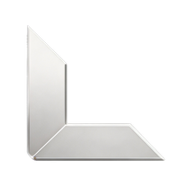

02
/ SKILLS
MY
SKILLS
工具是思维的延伸，创意是解决问题的钥匙。覆盖商业视觉全链路的创作工具与技能体系。

AI
·
TOOLS
LiblibAI
AI
图像生成
调参面板
–
环形文字 · CurvedLoop
旋转速度
环尺寸
字号
缺口大小
缺口朝向
工具行 · LogoLoop
第一行速度
第二行速度
卡片间距
卡片高度
环形 · 3D 角度（俯仰/摆角/旋转/透视/偏移）
俯仰角
左右摆角
平面旋转
透视强度
横向偏移
纵向偏移
图标行高（上下留白）
两行间距
第二行反向
复制参数
拖动滑块找手感 → 点「复制参数」把数值发我，我写进正式版。
弧形文字可用鼠标左右拖拽。
3D 角度可单独微调弧形文字的俯仰 / 摆角 / 旋转 / 透视 / 偏移。